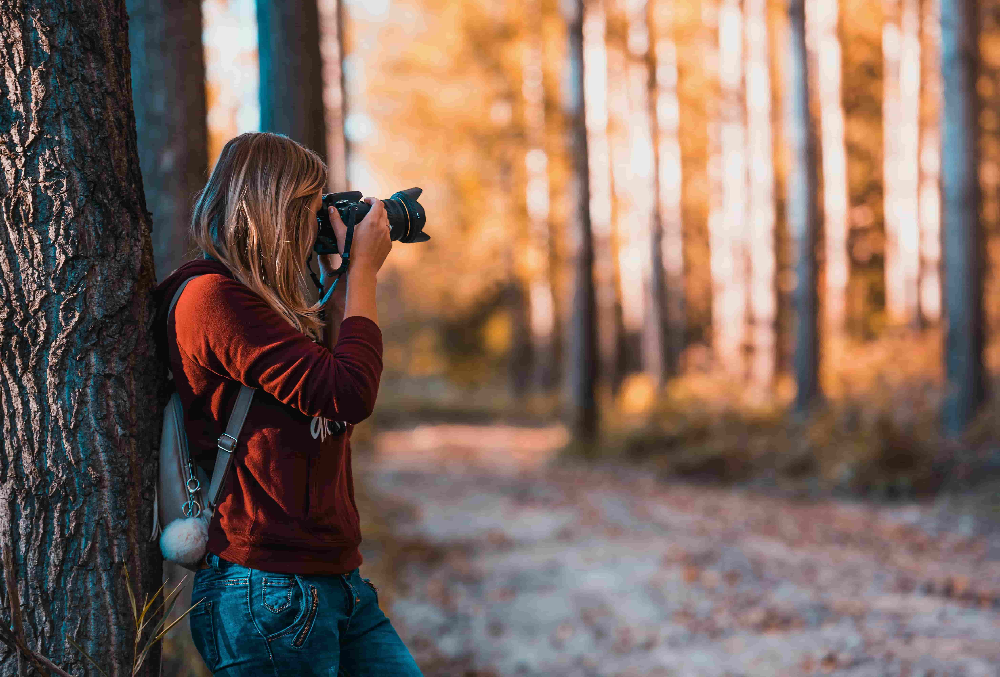
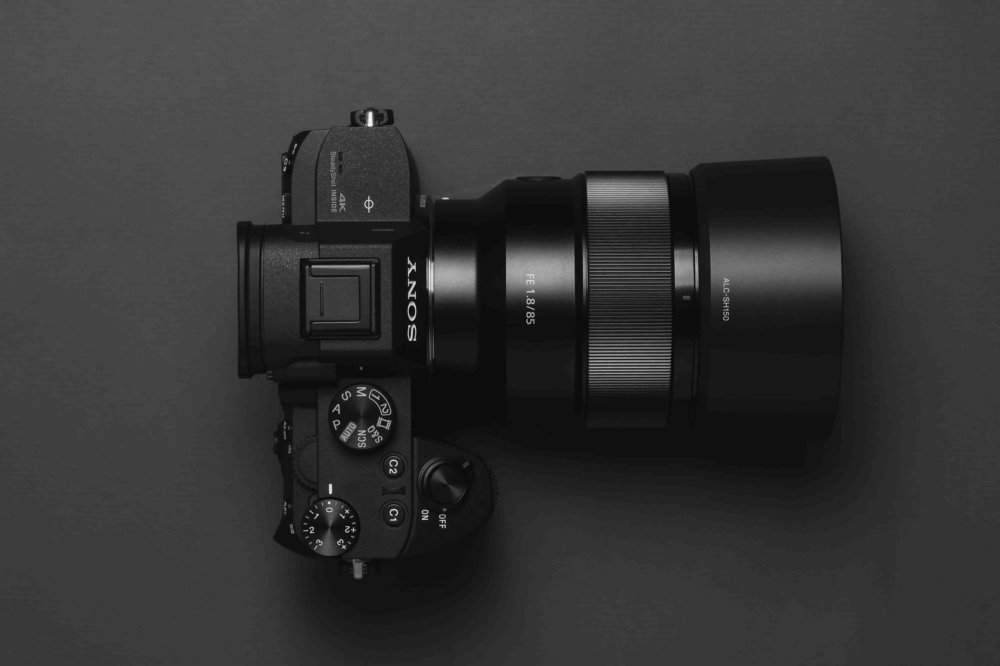

So you want to take better pictures?
Are you ready to move up from your camera phone? How many sunsets did you see and wish you could properly capture it to share later?
With the help of this site, you will get all the basic skills you need to take your photography to the next level! We will go over all
essential mechanics that go into a great picture and get you out there making art in no time.
What we offer
How does a camera work?
 There are so many cameras out there, and this site will teach you how they all capture images. All cameras use the same
basic mechanics to capture an image. Once you've learned on one, you will be able to take great pictures with any of them.
There are so many cameras out there, and this site will teach you how they all capture images. All cameras use the same
basic mechanics to capture an image. Once you've learned on one, you will be able to take great pictures with any of them.
What makes a picture look good?
 While art is always a subjective matter, an understanding of composition is a good place to start. This website will teach you the fundamentals of putting together a picture that is pleasing to look at, and will amaze your friends.
Does it zoom in?
 Some camera lenses can zoom in to make distant objects look closer, while others capture a wide view but distort their surroundings. The amound of zoom a lens has is based on its focal length, and this site will teach you how to choose the right length for your pictures.